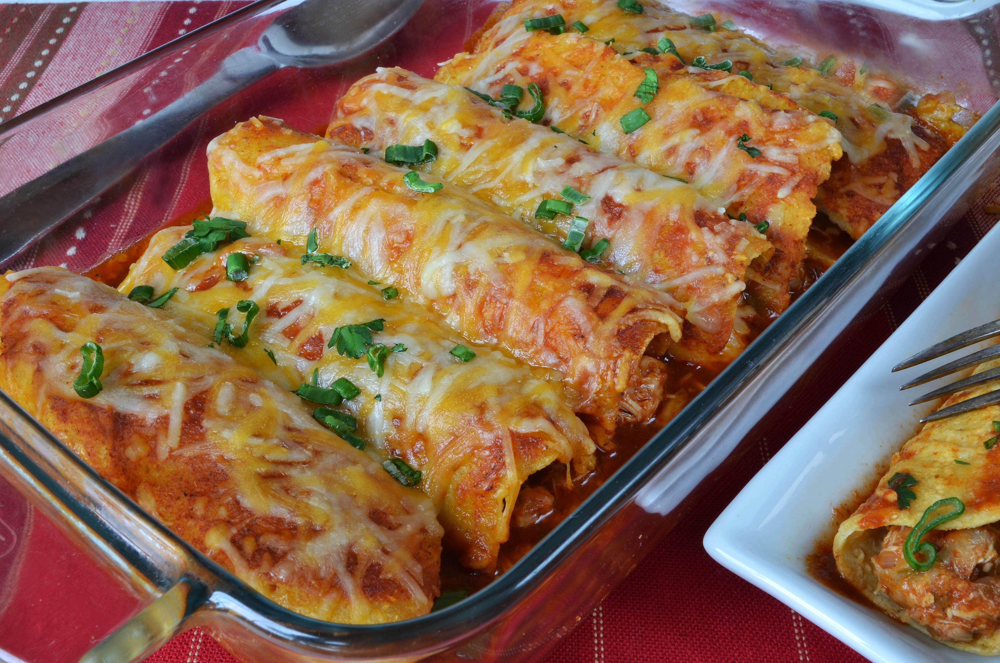
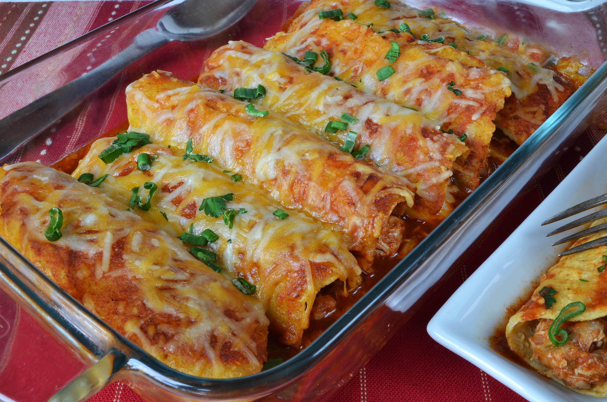
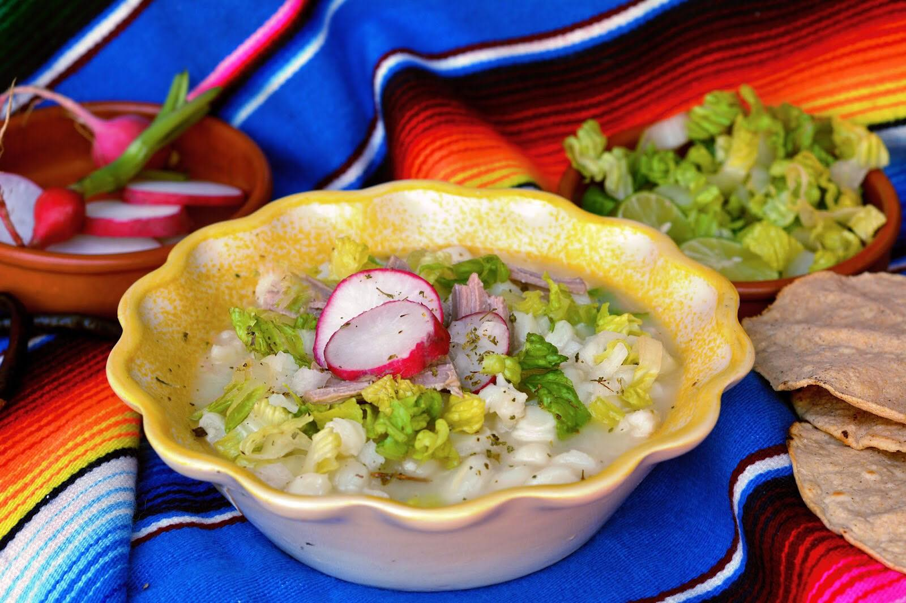

Enchiladas
Disfruta de las mejores enchiladas Mexicanas
Disfruta de las mejores recetas del mundo
Explora cientos de recetas mexicanas 100% auténticas con fotos e instrucciones paso a paso fáciles de preparar.
¡Cocina deliciosos platos tipo restaurante preparados desde la comodidad de tu casa!
Disfruta de las mejores enchiladas Mexicanas
Cocina este gran platillo tipico mexicano
Puedes enviarnos un correo a: email